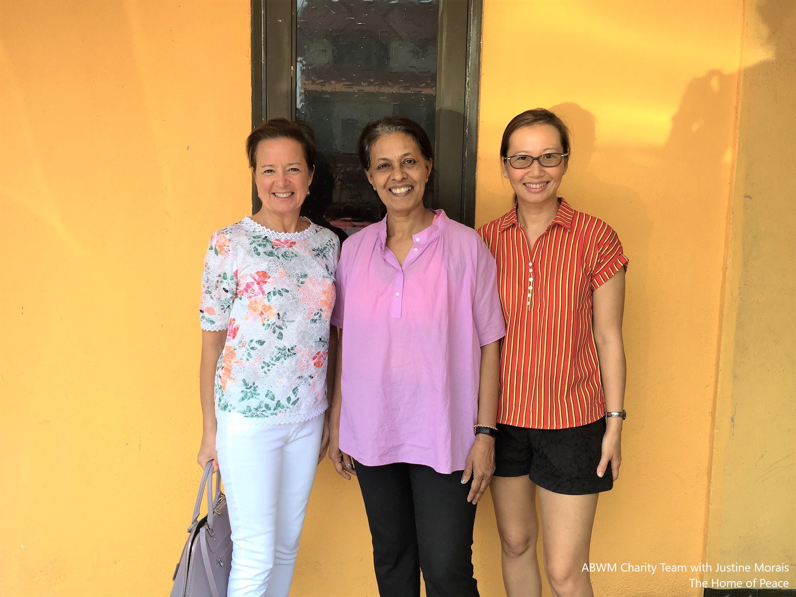
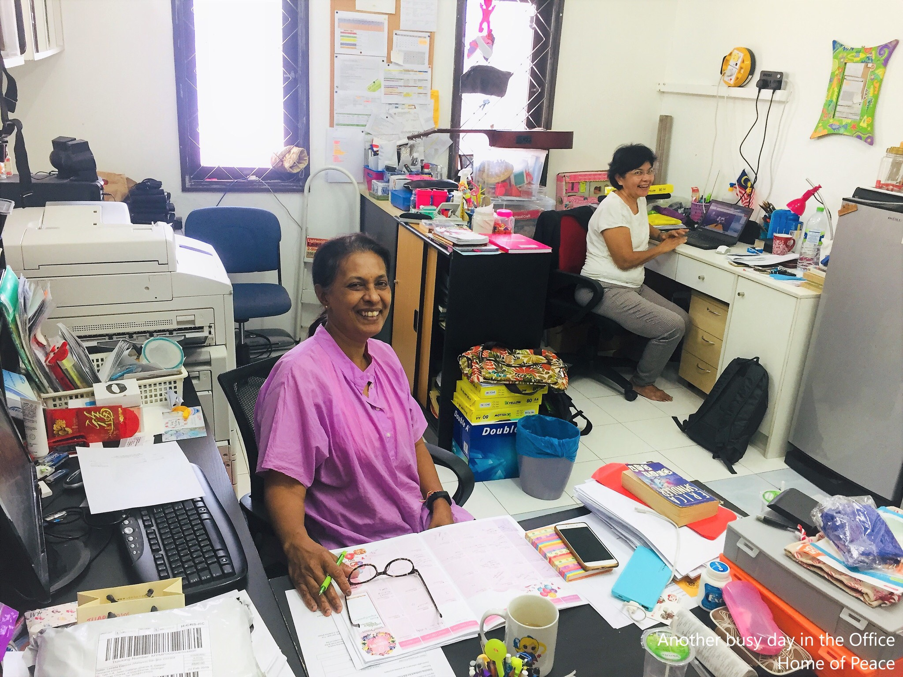

Home of Peace
“Educate one girl and you might just educate an entire nation!”
My name is Justine Morais. In 1993 I started the Home of Peace. My mission: to help educate as many girls as possible.
Starting as a home for 2 girls, Home of Peace has now grown into a safe and nurturing environment which 20 young girls call home.
Home of Peace is a registered Home for girls from underprivileged backgrounds. Some of our girls were abused, neglected and abandoned.
Almost all of them were not registered at schools as education was not a part of the plan for their lives. Most of them stayed home
as the responsibility of taking care of the family – even at a very young age – fell on their shoulders while their mother had to go to work;
as in some cases the father had abandoned the family or had passed away.
The girls were mostly from around the slum areas in and around Kuala Lumpur. By and large such areas are not safe for anyone, much less
young children. These places are rife with dangers like gangsterism, drug taking and the most horrific being the vice trade.
Home of Peace was set up in 1993 and its sole aim then and now is to help educate as many girls as possible. The level of education for each
girl will be determined by themselves: if one girl wanted to continue her education after Secondary School – she would be encouraged to do so,
and if another wanted to be a chef she too will be encouraged and helped along.

At the end of their time/stay at Home of Peace, the girls are matured, well groomed, well-mannered, independent and stable individuals.
Our girls are home-schooled and the aim is for them to sit for the International General Certificate of Secondary Education (IGCSE)
, an internationally recognized certification created by the Cambridge International Examinations for end of secondary school and
entrance to Advanced Level or pre-university studies. One of our girls, who scored well in her IGCSE, wanted to major in Journalism.
We are working on securing a scholarship for her to continue her studies. Among our ranks are: two administrative assistants, a budding
chef is now studying at a local Culinary College with an ambition to start her own Café, and another child is working part-time to continue
her studies for a master’s degree in Early Childhood.
Every child has the potential to reach great heights – some are blessed to be born into families who can see to their every need and some don’t.
It is this child whom Home of Peace seeks to help. However, Home of Peace is a home for girls and this is our target group. You may wonder
why we are concentrating on girls only. The answer is quite simple: most girls will grow up to be mothers and it is mothers who will shape and
shake a nation into being. Educate one girl and you might just educate an entire nation!
Since Home of Peace started in 1993 we are pleased to know that almost twenty girls who would not have been educated – have been
educated! You may wonder why the number of girls is “low”. We have decided from the start to limit the number of girls at the home to twelve.

We also believe in taking in girls from a young age, in the hope that less damage would have occurred in their life. Presently, the age range
in the home is from two to eighteen years old. Our girls have come to us as young as six weeks old. From experience, when a child comes
to us at a young age, she is quicker to adapt to her new environment, to settle in and absorb from her surroundings.
HOME SCHOOLING FOR SUCCESS
As most of our girls have been through some form of trauma and were not coping well in normal schools, home schooling provided individual attention
in subjects that are challenging to each of them. We have one paid full-time teacher who is aided by a group of committed volunteers, thus ensuring
that each girl can enjoy the full attention of their teachers. It has now been seven years since we started home schooling our girls and we are seeing the
positive results of this decision!
One of our girls was attending a school for children with special needs. For so long she was labelled as “slow” and disruptive but after being taken
for an assessment, she was diagnosed with Attention Deficit Hyperactivity Disorder (ADHD). She is now being home schooled and is doing well enough
to join her peers at the same level. She too is being prepared to sit for the IGCSE.
COLLEGE DEGREES
From the very beginning we have encouraged and informed our girls that if they are willing to work hard in their studies, Home of Peace will help and
encourage them to do so.
One of our girls had her heart set in earning a degree in Early Childhood Education and wanted to study in Auckland, New Zealand.
She has completed her Degree and will soon embark on her Masters’ once she has saved enough!
Growing up, this child faced a lot of challenges. She was diagnosed with KLIPPEL-TRENAUNAY SYNDROME (KTS)*, a rare
congenital disorder where there are too many blood vessels in her left foot which causes discomfort and pain, not to mention the growth of that foot
in length and diameter as opposed to her right foot. Since she turned nine, she has had three operations on her leg but she has not let that pull her
down. Her dream is to be trained as a Speech Therapist so that she can, in turn, help other children with similar background as hers.
We are, of course, very proud of her and we have promised her that we will help her all the way.
MOVING FORWARD
This year marks almost 24 years of service and we are planning to start a school where undocumented children and those from other shelters can attend
and get a good education. We are also planning to develop a half an acre land leased to us into a place where children who have undergone stress and trauma
can come to rest and heal.
Home of Peace, as with any other home, have a lot of needs in order to operate and provide for our children. However, our urgent needs for the moment are:
- Biology teacher – IGCSE Level
- History teacher – IGCSE Level
- Extended Mathematics teacher – IGCSE Level
- Science teacher – Primary Level
- Art teacher
- Reading to our 2-year olds
- A Speech Therapist for our 4-year old
- An office manager
- A 2-seater sofa bed
We would be so grateful for any help from volunteer teachers for the above subjects!
Justine Morais
Home of Peace
100, Jalan Nyaman 1, Taman Bukit Indah
Jalan Klang Lama, Kuala Lumpur
Email: homeofpeacekl@gmail.com
Phone: 012-457-4044 / 017-875-5676